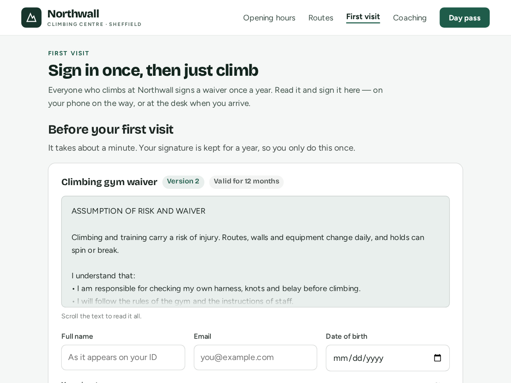

Waiver: Consent & Signatures
Signed waivers, kept until they expire
- Signature pad for finger, stylus or mouse
- Guardian sign-off for under-18s
- Change the text; the desk lists who re-signs
- Search, print or export every signed form

What it does
Waiver keeps the signed forms for your gym, studio or centre in one place, on the site you already run. Publish your text once, put the form on a page, and members read it and sign with a finger on their phone or with a mouse at the desk.
Each record holds the name, email, date of birth, the signature image and the day the waiver expires. If the date of birth is under the age you set, the form asks for a parent or guardian's name, email and signature before it will send. The person who signs sees the expiry date straight away, and the desk can find them by name or email.
When you edit the wording, the app marks every earlier signature out of date and puts those people on a re-sign list, with a message you can copy for each one. Expiry works the same way: waivers close to their end, and the ones already past it, are listed with the days left.
No IP addresses are stored. You choose how long records are kept, and they are deleted when the app is removed from your site. The line under the form tells the person what is stored and for how long.
The free plan gives one waiver, 30 days of records and a small credit link.
Price
Free
- One waiver, one page
- 30 days of signed forms
- Small credit link
Premium
$5/month, $4/month yearly
- Every waiver, each on its own page
- Guardian block for under-18s
- Your retention, search, CSV export, print view
- The re-sign list after a text change
- Remove the credit link
Pro
$9/month, $7.20/month yearly (20% off). Three things an owner cannot do by hand:
- The exact text each person signed is kept with their record and printed on it
- A seal on every record: one click checks it has not been altered since signing
- Paper waivers imported from a spreadsheet into the same desk, with their own expiry